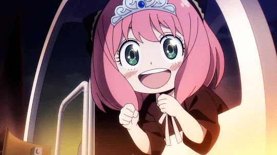

Bienvenidos
¡Ey, gente del mundo otaku! Bienvenidos a mi rinconcito digital, donde la pasión por el anime se desborda como una ola gigante en la playa de Okinawa. Aquí encontrarás un festín de palabras y emociones dedicadas a ese universo colorido y lleno de aventuras que tanto nos apasiona. ¿Eres un novato en el mundo del anime? ¡No hay problema! Prepárate para un viaje alucinante a través de recomendaciones, análisis y curiosidades que te ayudarán a sumergirte en este fascinante universo nipón. ¿Eres un veterano de mil batallas otaku? ¡Genial! Aquí encontrarás debates apasionantes, teorías descabelladas y, por supuesto, ese toque de nostalgia que nos hace recordar con cariño aquellos clásicos que marcaron nuestra infancia. Así que, agarra tus palomitas, acomódate en tu silla gamer favorita y prepárate para explorar un mundo donde los límites los pone tu imaginación. ¡Bienvenidos a mi web sobre anime, donde la aventura nunca termina y la diversión está garantizada!
